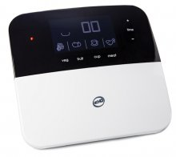
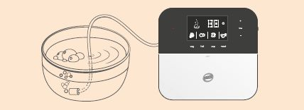
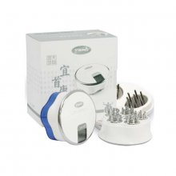
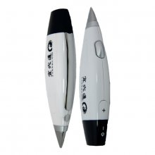
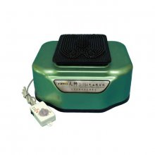
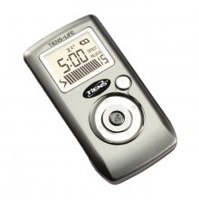

Оздоровительные приборы «Тяньши»Оздоровительные приборы, предлагаемые компанией «Тяньши», сочетают в себе современные технологии и методы воздействия традиционной китайской медицины, имеют современный, эргономичный дизайн. Все приборы «Тяньши» уникальны по воздействию на организм, многофункциональны в использовании, удобны в применении и эффективны в качестве профилактики различных недугов и восстановления защитных функций организма. Предлагаем вашему вниманию: |
|

Электроприбор для очистки фруктов и овощей DiCHO (модель TQ-Z08)Действие прибора второго поколения основано на усовершенствованных свойствах озона! С ним вы сумеете эффективно позаботиться о том, чтобы в вашем доме присутствовал очищенный воздух, а на вашем столе всегда были только экологически здоровые продукты питания и наичистейшая питьевая вода! Преимущества: Сферы применения:  |
|

Акупунктурный электромассажер «Ишоукан» для ухода за головой (модель TQ-Z06)Новая усовершенствованная модель служит для стабилизации артериального давления, проведения лазерного воздействия в лечебных целях, а также применяется в качестве массажера для процедур комплексного оздоровления. В «Ишоукане» используется система управления, основанная на интеллектуальной микросхеме SCM (Supply Chain Данный прибор – высокотехнологичное изобретение, основанное на теории современной биомедицины и учении о каналах и меридианах китайской медицины, полностью соответствующее древним традиционным и современным теориям. Преимущества: Показания к применению: Эффективность: Противопоказания: Внимание! |
|

Акупунктурный электромассажер «Исюэтун» для ухода за телом (модель TQ-Z05)Электромассажер «Исюэтун» от компании «Тяньши» основан на таких методах китайской медицины, как массажгуаша, иглоукалывание и прижигание, теория пяти игл «Мэйхуа» для иглоукалывания, а также сочетает в себепринципы технологии низкочастотной импульсной терапии. Преимущества: Показания к применению: Эффективность: Противопоказания: Внимание! |
|

Массажер S-780 (СЦЭК – стимулятор циркуляции энергии и крови)Сочетает в себе уникальный опыт древних китайских целителей и современный высокотехнологичный способ активации точек акупунктуры. Работа массажера основана на методе низкочастотной вибрации, который позволяет нормализовать все биохимические процессы в организме, т.е. усиливает кровообращение и микроциркуляцию, улучшает обмен веществ, укрепляет иммунитет, нормализует циркуляцию энергии, способствует выведению шлаков и токсинов из Преимущества: Показания к применению: Эффективность: Противопоказания: Внимание! |
|

Электромассажный прибор TIENS-LIFE «Тяньши» (модель IDOC-01)Портативный диагностический прибор определяет состояние органов тела человека благодаря уровню болевых ощущений на поверхности кожи без ее прокалывания. Преимущества: Показания к применению: Эффективность: Противопоказания: Внимание! |